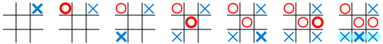

Gameplay
Tic-tac-toe is played on a three-by-three grid by two players, who alternately place the marks X and O in one of the nine spaces in the grid.
In the following example, the first player (X) wins the game in seven steps:
There is no universally agreed rule as to who plays first, but in this article the convention that X plays first is used.
Players soon discover that the best play from both parties leads to a draw. Hence, tic-tac-toe is often played by young children who may not have discovered the optimal strategy.
Because of the simplicity of tic-tac-toe, it is often used as a pedagogical tool for teaching the concepts of good sportsmanship and the branch of artificial intelligence that deals with the searching of game trees. It is straightforward to write a computer program to play tic-tac-toe perfectly or to enumerate the 765 essentially different positions (the state space complexity) or the 26,830 possible games up to rotations and reflections (the game tree complexity) on this space. If played optimally by both players, the game always ends in a draw, making tic-tac-toe a futile game.
The game can be generalized to an m,n,k-game, in which two players alternate placing stones of their own color on an m-by-n board with the goal of getting k of their own color in a row. Tic-tac-toe is the 3,3,3-game. Harary's generalized tic-tac-toe is an even broader generalization of tic-tac-toe. It can also be generalized as an nd game, specifically one in which n = 3 and d = 2. It can be generalised even further by playing on an arbitrary incidence structure, where rows are lines and cells are points. Tic-tac-toe's incidence structure consists of nine points, three horizontal lines, three vertical lines, and two diagonal lines, with each line consisting of at least three points.
Combinatorics
When considering only the state of the board, and after taking into account board symmetries (i.e. rotations and reflections), there are only 138 terminal board positions. A combinatorics study of the game shows that when "X" makes the first move every time, the game outcomes are as follows:
- 91 distinct positions are won by (X)
- 44 distinct positions are won by (O)
- 3 distinct positions are drawn (often called a "cat's game")